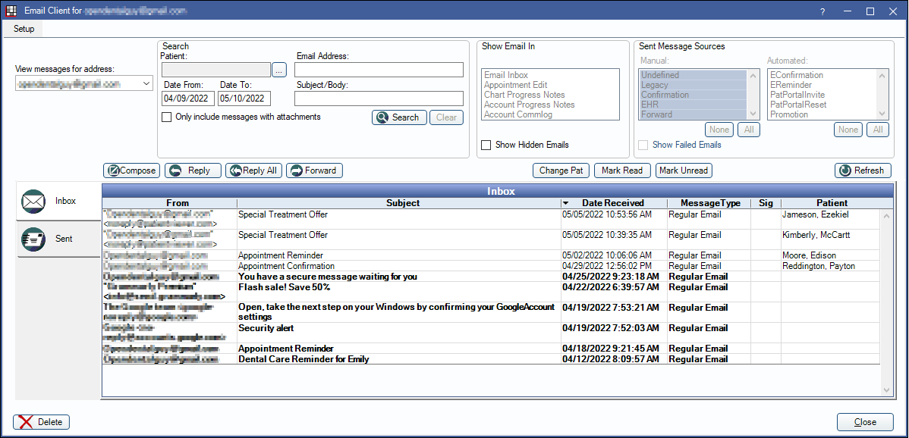
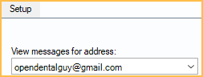
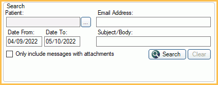
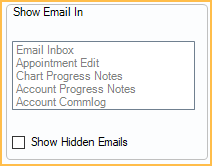
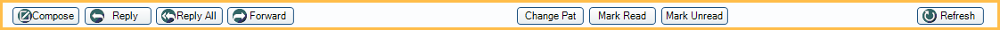
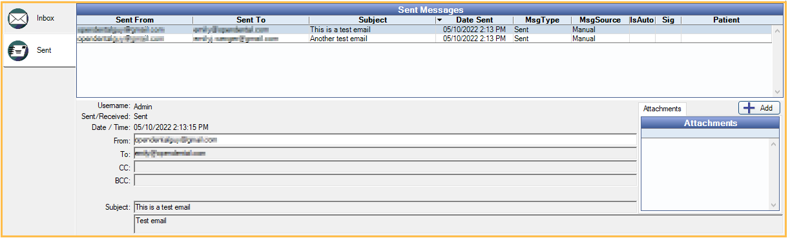
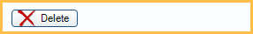

Email Client
Use the Email Inbox to view and send regular emails, secure emails, and WebMail messages.
In the Manage Module, click Emails.
Emails that display in this window vary depending on user and message type.
- WebMail messages only display when the provider is logged in.
- Regular and Secure Email replies display for all users.
- Emails received by the practice/clinic/group email address are viewable by all users.
- User-specific emails are only viewable when the user is logged on.
This window can be left open in the background so that other areas of Open Dental can be accessed.
The Open Dental Service is required to download new emails. New emails on the mail server are automatically synced in the background. Automatic download occurs every time Open Dental starts, when the inbox is opened, and at set intervals (see Email Setup).
Setup and Addresses
- Setup: Access Email Setup for practice/clinic/group setup.
- View Messages for address: Lists all mail addresses the user can view messages for. Click the dropdown to select a different address.
- Defaults to the logged-on user's email address or the practice/clinic/group email address.
- WebMail is for Secure WebMail Feature and only is an option when the logged-on user is a provider.
Search
Use the Search area to find specific emails by patient, email address, date range, or subject/body.
First select the Inbox or Sent Message tab, then use the following fields:
- Patient: Click [...] to select a patient.
- Email Address: Enter the email address.
- Date From/To: Search for messages sent or received during a date range. Use the DD/MM/YYYY format.
- Subject/Body: Search for specific in the subject and body text.
- Only include messages with attachments: Check to only list messages that have an attachment. Uncheck to ignore this criteria.
Click Search to enter search mode (turns yellow). Matching results will list.
Click Clear to exit search mode.
Show Email In
In the Show Email In area, select where an individual email will show or not show. To show the email in an area, highlight it. To hide the email in the area, deselect it. By default, all areas are selected.
- Email Inbox
- Appointment Edit: Edit Appointment, Communications Log area
- Chart Progress Notes: Chart Module, Progress Notes
- Account Progress Notes: Account Module, Progress Notes
- Account Comm Log: Account Module, Communications Log area
Show Hidden Emails: Check to show emails that have been hidden in all areas.
Sent Message Sources
In the Sent Message Sources area, select which emails are shown in the Sent Messages grid or click All to show all sent emails. Clicking None clears the current selection.

The source filter options are only available while on the Sent tab and an email address is selected. If WebMail is selected, the filter options are disabled and all sent WebMail messages will show.
Manual: Emails created and sent by a user.
- Undefined: Email messages that do not have a type assigned.
- Legacy: All email messages sent prior to version 21.1.6. Messages sent after updating to version 21.1.6 will use the types listed below.
- Confirmation: Emails sent from the Confirmation List.
- EHR: Emails sent from EHR Summaries of Care.
- Forward: Emails forwarded from the Email Client by clicking the Forward button.
- Hosting: Generated by our email hosting.
- Manual: These are manual emails created by
- Clicking the Compose button in the Email Client.
- Clicking the Email button or any of the dropdown options from the Main toolbar.
- PaymentReceipt: Emails sent when clicking the Email Receipt button in the Payment window.
- Recall: Emails sent from the Recall list.
- Reply: Emails replied to from the Email Client or Edit Email Message window.
- Sheet: Emails sent from the Fill Sheet window or Edit Deposit Slip window.
- Statement: Emails with a statement sent from the Bills List, Statement window, or Statement button or dropdown in the Account Module.
- TreatmentPlan: Emails sent by clicking the Email TP button.
- Verification: Emails sent automatically from the Verification list.
Automated: Emails automatically created and sent by an Open Dental feature.
- EConfirmation: Emails automatically sent by the eConfirmation feature.
- eReminder: Emails automatically sent by the eReminder feature.
- PatPortalInvite: Emails automatically created when inviting a patient to the patient portal.
- PatPortalReset: Emails automatically sent when the patient forgets their password.
- ThankYou: Emails automatically sent for Thank You Messages.
- WebSchedASAP: Email automatically sent from the Web Sched ASAP feature.
- WebSchedRecall: Emails automatically sent from the Web Sched Recall feature.
Show Failed Emails: Check to show emails that were sent but failed to deliver to the recipient.
Email Options
- Compose: Create a new email message.
- Reply: Create a reply message for the selected email.
- Reply All: Reply to all email addresses included in the email. Reply All cannot be used on secure email replies.
- Forward: Forward a message.
- Change Pat: Attach the message to a patient. Patients are automatically attached to incoming messages when Open Dental can find an exact match.
- Mark Read/Mark Unread: Change the message status. Bold messages indicate unread messages.
- Refresh: Refresh the inbox for the selected email address.
Inbox Tab
Click the Inbox tab to view received messages for the selected email address. Click a column header to sort the messages alphabetically in ascending or descending order.

Unread messages will be bold. Highlight a message to preview the message text in the lower portion of the window, or double-click a message to open it in a new window.
Columns:
- From: The email address of the sender.
- Subject: The subject sent with the email.
- Date Received: The date and time the email was received by the mail server.
- MessageType: The type of message.
- Regular email: A clear text email.
- Encrypted email: An encrypted email.
- SecureWebMail (sent via the patient portal)
- Unsent
- Sig: Y Indicates the message is digitally signed (an encrypted email) and the sender is a trusted source. N indicates there is digital signature, but the sender is not a trusted source yet. Click the N to add a source to your trusted list.
- Patient: The patient attached to the email. If blank, there is no patient attached. Open Dental automatically attempts to attach a matching patient to incoming messages using this logic:
- Searches for the patient if the email includes an attached Summary of Care (ccd.xml).
- Searches for a match using LastName, FirstName, and Birthdate.
- Searches for an exact email address match.
- If multiple family members have matching email address, it will attach to the guarantor.
- If multiple patients across two or more families have the same email address, or there is no patient with a matching email address, the patient will be unassigned (left blank).
Note: To assign an email to a patient, highlight the email then click Change Pat.
Sent Tab
Click the Sent tab to view all messages sent by the selected address from Open Dental. Sent messages can only be viewed, not edited. They can be deleted if there is no patient attached.
Sent Messages columns: The columns are the same as the Inbox, except for the following:
- Sent To: The email address of the recipient.
- Date Sent: The date and time the email was sent by the mail server.
- Msg Type: The status of the message.
- Sent: A clear text email message was sent.
- SentDirect: An encrypted email was sent.
- Msg Source: The message origin. For example, an email sent from the recall list will have a message source of 'Recall'.
- Is Auto: Displays an X if the message was an automated email (e.g., eConfirmation, eReminder, etc.)
Highlight a message to preview the message text in the lower portion of the window, or double-click a message to open it in a new window.
Delete
To delete a message, highlight it then click Delete.
Deleting a received message removes it from the inbox only, not the email server. It will not download from the email server again. Sent messages can only be deleted when there is no attached patient.
Emails attached to a patient are removed from the inbox, yet still visible in the Commlog and Progress Notes.
Emails not attached to a patient are permanently removed.